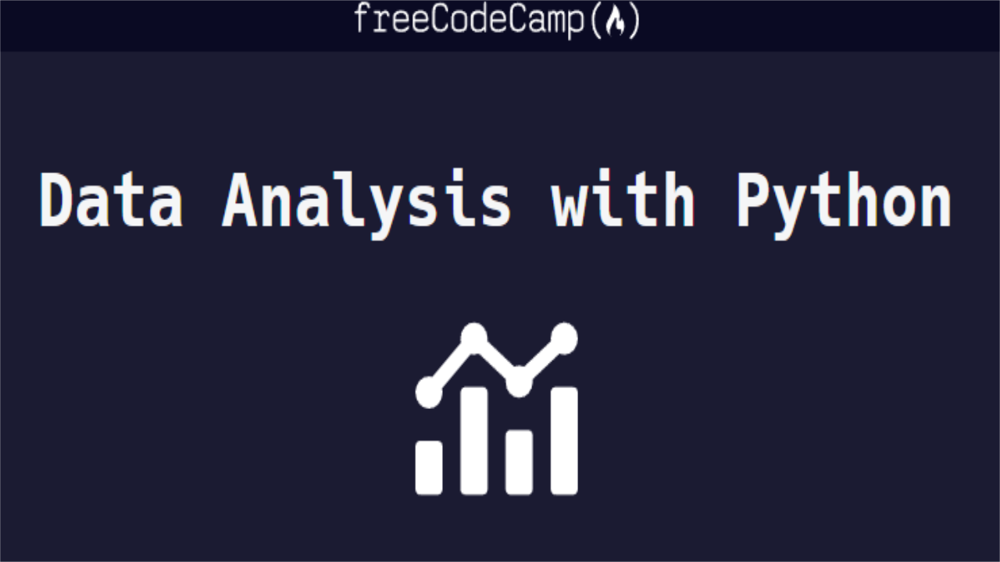

This ETL pipeline project is designed to reinforce foundational
data principles by applying self-study insights and internship
experiences. Utilizing Microsoft Azure tools, including Data
Factory, Dataflows, Databricks, and SQL, the project centers on
constructing a music database through the extraction,
transformation, and loading of data from Spotify's API. The
workflow seamlessly loads data into Azure SQL, incorporating
automation triggers. This endeavor represents a substantial
learning journey, providing valuable insights into orchestrating
data pipelines, working with APIs, and gaining a comprehensive
understanding of ETL processes.
.png)

An "Automated Forex Trading Bot with Technical Analysis" project
showcases the development of a sophisticated algorithmic trading
system designed to execute foreign exchange (Forex) trades based
on real-time market data and technical indicators. This project
leverages Python, popular data analysis libraries, and the OANDA
REST API for Forex trading.

This data analysis project focuses on COVID-19-related datasets,
specifically tracking COVID-19 cases, deaths, and vaccinations
across different locations and continents. The primary goal is to
analyze and visualize COVID-19 trends and vaccination progress,
providing valuable insights into the pandemic's impact on various
regions. Several SQL queries and techniques are employed to
extract meaningful information from the data:

This data cleaning project focuses on preparing Nashville housing
data for further analysis by standardizing the data, populating
missing property address information, breaking down address fields
into individual columns etc. The primary objective is to ensure
the dataset is well-structured and ready for analysis. Below are
the key data cleaning steps:

Its primary objective is to systematically gather and extract a
wealth of essential data concerning a wide array of anime titles
meticulously cataloged on the platform.
This scraping endeavor harnesses the capabilities of
industry-standard libraries, notably BeautifulSoup for HTML
parsing and requests for web page retrieval, enabling precise data
extraction and aggregation

This showcases a series of data analysis and visualization
projects completed as part of the Data Analysis with Python
certification from FreeCodeCamp.org. These projects demonstrate
strong proficiency in data manipulation, statistical analysis, and
data visualization using Python and relevant libraries.

In this project we gathered price data for the 5 major forex pairs
over a 10 year period.
Using python we cleaned the data to observe and understand if and
how each pair correlated with each other. Data was acquired by
making request to OANDA's API.

Tableau Dashboards for project on COVID 19